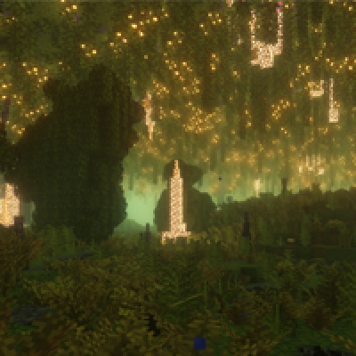
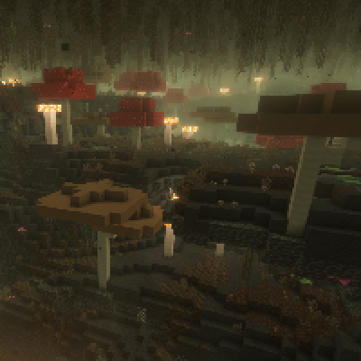
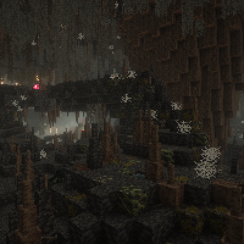
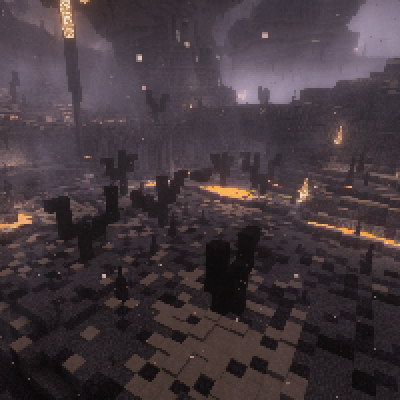
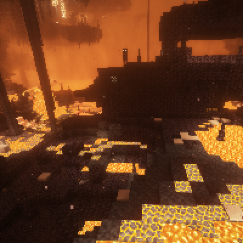
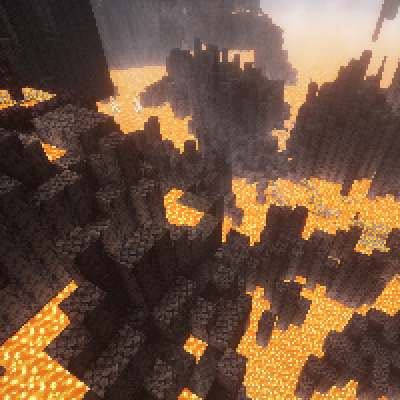
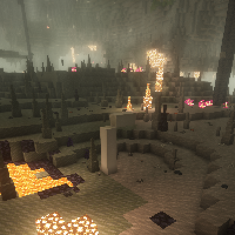

Биомы
Биомы
В Бездне есть полный набор новых биомов для исследования! Большинство из них делятся на две категории: верхние и нижние. Верхние биомы встречаются на верхних уровнях Бездны, в то время как нижние расположены в ближе к лаве.
Пышная лощина
Влажно и полно зелени! Самая гостеприимная зона для подземной базы.
Гниющие пещеры
Природные переработчики усердно трудятся в этом влажном регионе, полном гниения.
Паучье логово
Ни за что не угадаете, кто тут обитает! А, и в этом месте можно найти огромные Травертиновые сталагнаты или колонны.
Пепельный лес
То, что осталось от Пышной Лощины после частых пожаров, вызванных жарой и магмой.
Магмовые пустоши
Богатая рудами область пироксенита, пересеченная реками лавы и покрытая пластами магмы.
Базальтовые дельты
Любимый всеми адский биом возвращается и по-прежнему так же опасен для исследования.
Глубокие пещеры
Между другими биомами находятся более простые области из габбро, сланца, гранита, диорита и гнейса.